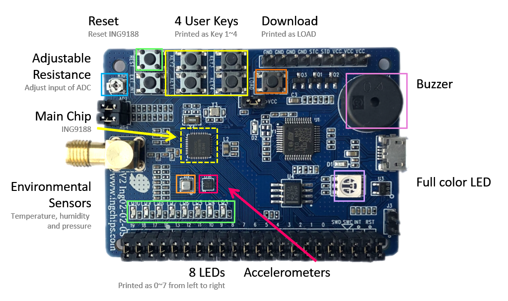
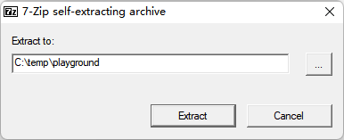
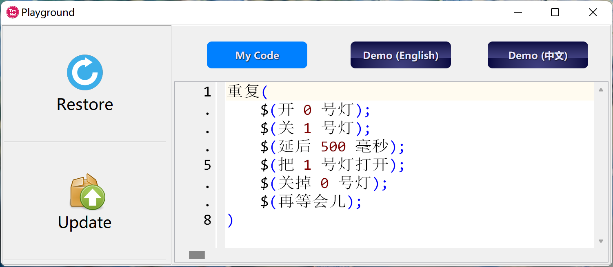
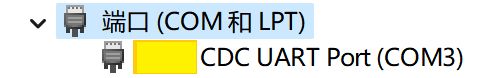
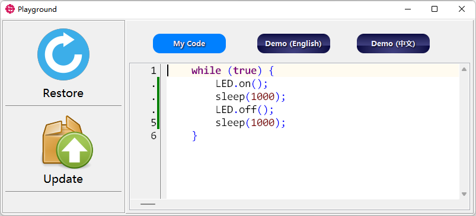

0. Say Hello to dev-boards
0.1 ING91881B dev-board

Ensure all the jumpers are in the same state as above.
1. Download Playground
The downloaded Playground program is a 7-Zip self-extracted package. Run the program and extract it to any directory (here, we will assume it is extracted to C:\temp\playground). Playground is completely portable. After doing a few experiments, if one don’t want to keep it, just delete the whole folder.

2. Try-Me
Open C:\temp\playground, and start the program named try-me:

There are two buttons on the left panel:
- Restore: Put to dev-board to initial setup
- Update: Deploy your code to the dev-board
There are three buttons on the top:
- My Code: View and edit your code
- Demo (English): View all demo codes written in English
- Demo (中文): View all demo codes written in Chinese
3. Connect the dev-board
Connect the dev-board to a Windows 10 or newer computer. When they got connected for the first time, please wait a while since Windows would automatically install drivers. Once installed, Windows would pop up a notification saying “Device is Ready”. Open Windows Device Manager, we can find a new COM device, whose number is assigned by Windows.

Please do not connect multiple dev-board simultaneously, and do not connect other J-Link, DAPLink debug probes to avoid issues in detecting COM ports.
4. Initialize your dev-board
Click the Restore button, below information will be shown in a popped up window:
USING COM3
wait for handshaking...
Here the COM number should be the same as found in Device Manager. Click the Load key on the dev-board, then a supporting program of Playground is downloaded to the dev-board. If everything goes will, we will see such outputs:
USING COM3
baud -> 921600
downloading platform.bin @ 0x4000 ...
|████████████████████████████████████████████████████████████| 100.0%
downloading default.bin @ 0x26000 ...
|████████████████████████████████████████████████████████████| 100.0%
downloading boot.bin @ 0x44000 ...
|████████████████████████████████████████████████████████████| 100.0%
-
For a ING91881B dev-board
Once initialized, all of the 8 LED(s) will be turned on and off one by one.
5. Write a program
Click Demo (Engligh) button, we can see a lot of examples. Each example is quoted by a pair of “```c” and “```”. Select one example, copy. Then click My Code, replace the code by pasting. For example:

Obviously, this piece of code wants to turn on the light, wait for one second, turn it off, and wait for another second, and again.
6. Update your dev-board
Click Update., information like this will be displayed on the popped up window:
USING COM3
building...done
starting download mode...done
baud -> 921600
downloading ../project/get_started.bin @ 0x26000 ...
|████████████████████████████████████████████████████████████| 100.0%
Examining the dev-board, we can see that the whole row of LEDs are now on and off periodicity, just as what the code wanted. Congratulations! You have successfully coded, built, and downloaded a program.
7. Next step
Now, you can take [a half day tour][(/blog/2022-03-04-ing918-playground)] in this playground, or download SDK and start developing on INGChips SoC seriously.
8. Trouble-shooting
-
Can’t find COM:
No UART foundOpen Windows Device Manager and check if Windows has recognized it and installed the driver.
-
Errors occur during updating dev-boards
Phoneminona Solution buiding...failCheck if too much code is pasted or only a portion is pasted. starting download mode...failPull out the dev-board and plug it in again;
Re-initialize the dev-boardprogress bar hangs Re-initialize the dev-board -
Errors occur during initialling dev-boards
Try again.